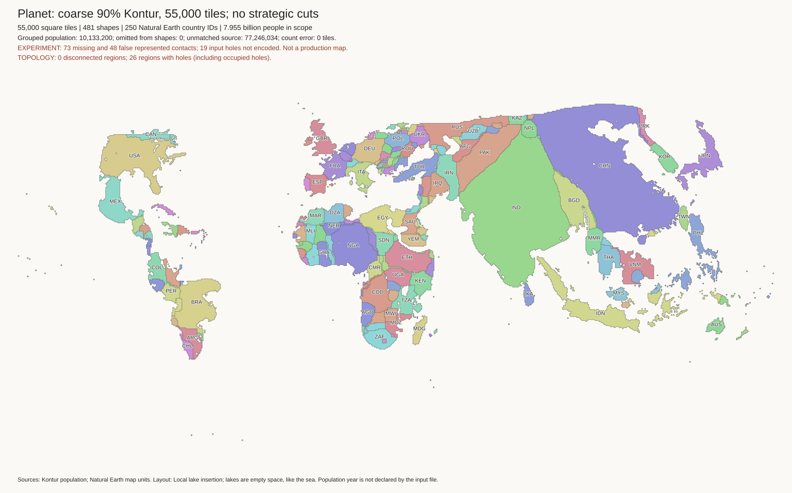
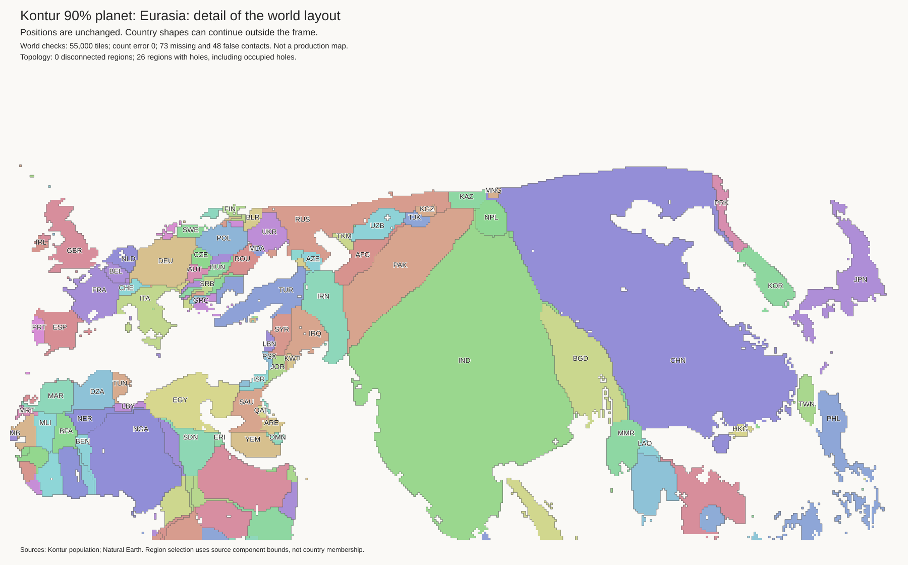

Full 55,000-tile candidate, with islands and empty lakes. Not a production replacement. This uses the selected coarser 90% Kontur guide. No strategic border cuts have been applied. Existing layout defects are listed below.
Open the full planet image · Previous preferred layout

| Check | This candidate | Previous preferred layout |
|---|---|---|
| Land tiles | 55,000 | 55,000 |
| Represented components | 481 | 481 |
| Component budget errors | 0 | 0 |
| Disconnected individual components | 0 | 0 |
| Named lakes / empty cells | 45 / 220 | 45 / 220 |
| Missing / false administrative contacts | 73 / 48 | 63 / 34 |
| Split source landmasses | 1 | 0 |
The same named lakes and their water-cell budgets remain. Lake positions differ. All water cells are empty and do not consume country tiles. The full tile map includes isolated landmasses omitted from the continuous guide, including Japan and Australia. Island populations retain their existing component budgets.
These failures prevent promotion. Exact budgets and connected individual components do not imply correct geography. The previous preferred layout and H3-MON mapping remain unchanged.

The Kazakhstan constraint remains after tile fitting. This candidate is a recorded no-strategic-cut control, not evidence that the constraint is solved.
Europe · Africa and lakes · Japan and Korea · Indonesia and Malaysia · North America · South America · New York · South Asia · Philippines
The world, Eurasia, Europe, Africa, Japan/Korea, Indonesia, New York, and South America images were checked visually. Japan is not bisected by South Korea. The island locations were fitted again; they are not copied from the previous map.
Used the saved coarse 90% guide, not a fresh flow run. Retained margin-one settings: stretch 1.2, flow-guide weight 8, smoothing sigma 4, water radius 8, water margin 1, and 16 fixed-border rounds. The exact original component tile budgets replace the continuous solver's approximate areas.
One deliberate change: retain the new flow centres instead of replacing them with globally aligned unwarped population sites. Then run fragment repair, island placement, mainland docking, geometric coast-frame placement, archipelago placement, and empty lake insertion. The old population transport map is not reused on the new mainland. Tiny numerical guide overlaps are trimmed under strict area and connectivity limits before fitting.
No early-cut run is included here. Use OWID as the visual gap reference, not as a required separation distance.
Tile layout · Empty lake cells · Lake placement record · Settings and input hashes · Layout metrics · Independent budget and lake checks · Geographic checks · Water-access table · Source landmass check · Artifact hashes
PYTHONDONTWRITEBYTECODE=1 output/auto-cartogram/geometry-env/bin/python \ examples/auto-cartogram/run_kontur_planet.py NEW_OUTPUT
No population-density export or new H3-MON link was generated.